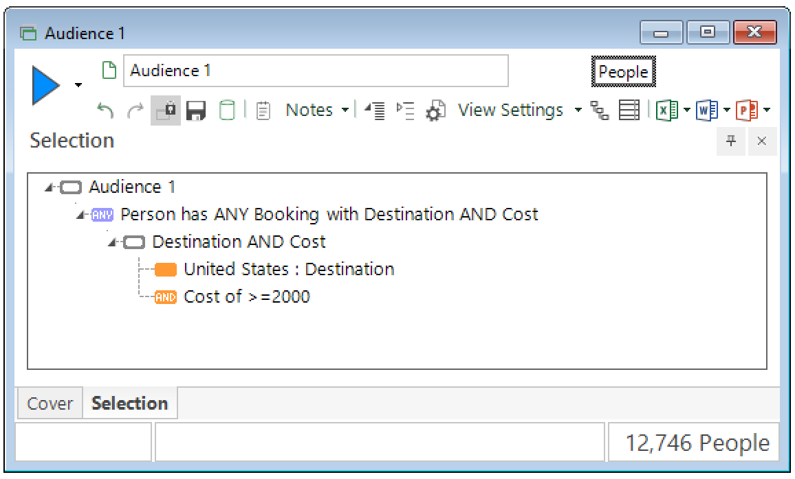
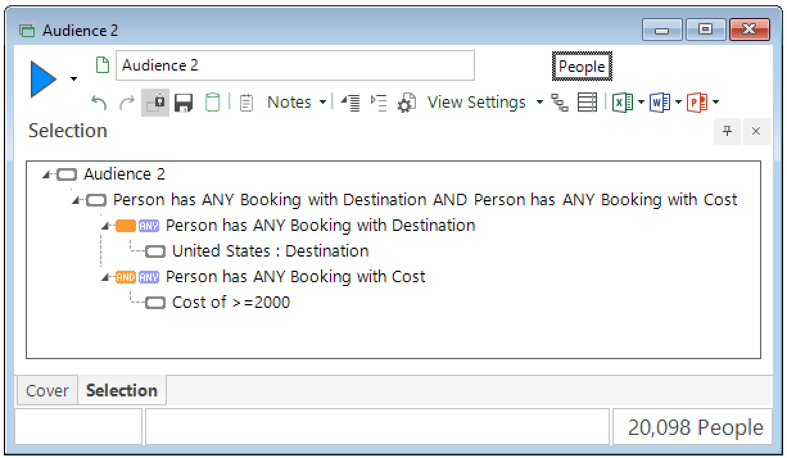

7. Controlling selection structure and tables
In this part of the tutorial we’ll learn how to control the way a selection is structured and joined together and how to change which table the selection counts.
Joining more than two selections together
We can use the & | ~ operators we saw in the previous part
to build more complex selections made of multiple parts:
>>> low_price_deals_audience = eligible_for_discount & ~high_earners
We could have even written the eligible_for_discount variable directly
using its constituent parts:
>>> low_price_deals_audience = (student | under_21) & ~high_earners
Here we’ve had to use parentheses
so that the student | under_21 gets combined first,
before the selection resulting from that is combined with ~high_earners .
Without parentheses, Python’s operator precedence rules
mean this would be calculated as:
>>> not_what_we_meant = student | (under_21 & ~high_earners) # since & takes precedence over |
Even if operator precedence means that your selection would resolve as intended without parentheses, it’s probably sensible to include them to be explicit and improve readability:
>>> either_of_two_pairs = (student & smiths) | (high_earner & under_21)
The & operator ‘binds’ more tightly than the | operator,
so this selection would resolve in the same way even if the parentheses were omitted.
But including them makes the logic easier to read
and enables you to communicate your intent to anyone else reading your code.
Determining the resolve table
The resolve table simply refers to the FastStats system table that the selection is set to count records from. As mentioned in the previous part, this is determined automatically according to the following rules:
for a selection consisting of a single ‘clause’, it is the table that the variable in this clause belongs to
for a selection made from a combination of several ‘clauses’, it is the table of the first (i.e. left-most) clause
normal Python operator precendence applies, including expressions in parentheses being evaluated first
The following code demonstrates this:
>>> student = people["Occupation"] == "4"
>>> usa = bookings["Destination"] == "38"
>>> student.table_name
'People'
>>> usa.table_name
'Bookings'
>>> (student & usa).table_name
'People'
>>> (usa & student).table_name
'Bookings'
So if your selection uses elements from different tables, make sure you begin it with an element from the table you want to use for the overall count.
Changing the resolve table
We can also manually change the resolve table of a selection
using the multiplication operator * with the table:
>>> been_to_usa = people * usa
>>> been_to_usa.count()
273879
>>> been_to_usa.table_name
'People'
Note
The table that we ‘multiply by’ needs to be a Table object.
Using the string of the table name will not work.
Again, we can use parentheses to group different parts of the selection to control how it is structured:
>>> audience_1 = people * (usa & at_least_2k)
>>> audience_1.count()
12746
>>> audience_2 = (people * usa) & at_least_2k
>>> audience_2.count()
20098
audience_1 selects people who have any Booking to the USA costing at least £2000
— the usa and at_least_2k clauses are grouped together with parentheses,
so a person must have a single Booking matching both criteria to be selected.
It is equivalent to this selection in FastStats:
{kind=link}

audience_2 selects people who have any Booking to the USA,
and have any Booking costing at least £2000.
The difference is that the conditions don’t have to apply to the same booking
— the person’s Booking to the USA could cost less than £2000,
as long as they have another Booking that does cost at least that much.
Here’s the equivalent selection in FastStats:
{kind=link}

A worked example
Let’s just remind ourselves what audience_2 looked like
and work through step-by-step how it’s evaluated, according to the rules above.
>>> audience_2 = (people * usa) & at_least_2k
(people * usa) is evaluated first because it’s in parentheses.
usa is a condition on the Bookings table,
but using the * operator on it with the People table manually changes it
to resolve to the People table.
We could re-write this part as a new variable:
>>> audience_2 = people_to_usa & at_least_2k
Working left-to-right, people_to_usa is clearly a selection on the People table
so at_least_2k is automatically adjusted to resolve to the People table to match.
We could re-write this behaviour explicitly as:
>>> audience_2 = people_to_usa & (people * at_least_2k)
If we ‘unzip’ people_to_usa to its original form, we get:
>>> audience_2 = (people * usa) & (people * at_least_2k)
which mirrors the structure of the equivalent selection in FastStats shown above.
So far we’ve only interacted with our data by counting selections, but in the next part we’ll learn how we can use data grids to create an export of our data, which we can analyse further.